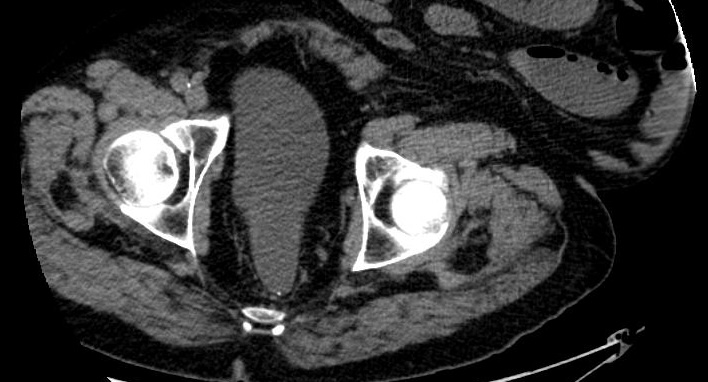

WORK EXPERIENCE
AI Model Developer
11/2023 - 2/2024

NovaRad (Medical imaging company)
Provo, UT
The project I oversaw involved training a DenseNet121 model to identify the orientation of a 3D CT scan.
Skills: Python, PyTorch, Scikit-learn, model training, image processing (3D images)
Perception, Cognition & Control Lab
Provo, UT
In this lab, my team and I worked with several LLMs (including ChatGPT, Text-Davinci-3, and Llama)
to understand their ability to emulate human responses. We explored natural language processing through
prompt engineering, and conducted in-depth data analysis.
Skills: Prompt engineering, data analysis, Docker
Machine Learning Research Assistant
5/2023 - 11/2023
Quality Assurance Specialist
5/2022 - 5/2023
BYU Broadcasting
Provo, UT
BYU Broadcasting is a company that provides family-friendly media through their applications ByuTV
and ByuRadio. As a part of their media team,
I identified and documented software defects, initiating collaboration for software issue resolution.
I also created automated tests for
maintaining performance and quality.
Skills: JavaScript, React, Node.js, Unit Testing